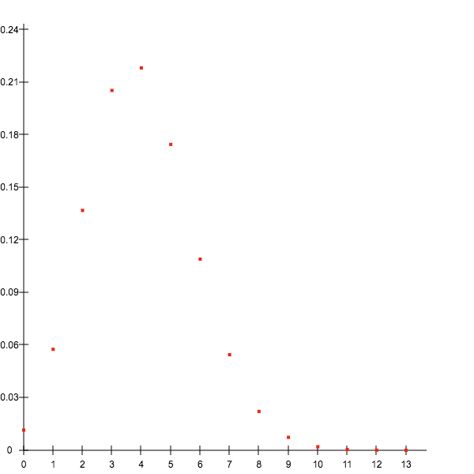

Adds several rows of new data to the existing data to work with. All the elements of
data or, if data is a JSON encoded string the array it evaluates to, need to have the same columns as the rest of the already existing data. Returns true on success.Parameters:
(array or JSON encoded string) dataset (required)
Usage:
stats.addData([{age: 22, gender: "male", "heartFrequency": 89}, {age: 37, gender: "female", "heartFrequency": 76}]);Returns:
trueAdds a new row to the data to work with.
dataset needs to have the same columns as the rest of the data. Returns true on success.Parameters:
(object) dataset (required)
Usage:
stats.addRow({age: 22, gender: "male", "heartFrequency": 89});Returns:
trueRanks the values of a column
column of a dataset data in ascending (default) or descending order (set order to 'desc'). Tied values (i.e. values that occur more than once) can be treated in two different ways: computing the mean of their ranks (default) or assign their ranks randomly (handleTiedValues = 'random'). This method returns an array of objects each containing the original data and a new property rank-xyz where xyz is the name of the column that was ranked. Set returnFrequencies to true to return an object instead, storing the array as the data property and an object of the values and their respective frequency as the frequencies property.Parameters:
(string) column (required)
Usage:
var testData = [
{ age: 22, iq: 110 },
{ age: 26, iq: 107 },
{ age: 43, iq: 85 },
{ age: 37, iq: 99 },
{ age: 26, iq: 104 },
{ age: 22, iq: 103 },
{ age: 29, iq: 106 },
{ age: 26, iq: 102 },
{ age: 35, iq: 102 },
{ age: 38, iq: 96 }
];
var testVars = {
iq: 'metric',
age: 'metric'
};
var stats = new Statistics(testData, testVars);
var assignRanks = stats.assignRanks('age', { returnFrequencies: true, order: 'desc' } );Returns:
{
data: [
{ age: 43, iq: 85, rank-age: 1 },
{ age: 38, iq: 96, rank-age: 2 },
{ age: 37, iq: 99, rank-age: 3 },
{ age: 35, iq: 102, rank-age: 4 },
{ age: 29, iq: 106, rank-age: 5 },
{ age: 26, iq: 102, rank-age: 7 },
{ age: 26, iq: 104, rank-age: 7 },
{ age: 26, iq: 107, rank-age: 7 },
{ age: 22, iq: 103, rank-age: 9.5 },
{ age: 22, iq: 110, rank-age: 9.5 }
],
frequencies: {
22: 2,
26: 3,
29: 1,
35: 1,
37: 1,
38: 1,
43: 1
}
}Creates a contingency table of the stored data for two nominal or ordinal variables given by
firstColumn and secondColumn and returns a nested object with the individual counts for each pairing, total counts, and in case of only two unique values for each variable the individual fields represented as a, b, c, d.Parameters:
(string) firstColumn (required)
(string) secondColumn (required)
Usage:
var testData = [
{ gender: 'male', agreement: 'no' },
{ gender: 'male', agreement: 'no' },
{ gender: 'male', agreement: 'no' },
{ gender: 'male', agreement: 'no' },
{ gender: 'male', agreement: 'yes' },
{ gender: 'male', agreement: 'yes' },
{ gender: 'male', agreement: 'yes' },
{ gender: 'female', agreement: 'no' },
{ gender: 'female', agreement: 'yes' },
{ gender: 'female', agreement: 'yes' },
{ gender: 'female', agreement: 'yes' },
{ gender: 'female', agreement: 'yes' }
];
var testVars = { gender: 'nominal', agreement: 'nominal' };
var stats = new Statistics(testData, testVars);
var contingencyTable = stats.contingencyTable('gender', 'agreement');Returns:
{
detailled: {
female: {
no: 1,
yes: 2,
total: 3
},
male: {
no: 4,
yes: 3,
total: 7
},
total: {
female: 3,
male: 7,
no: 5,
yes: 5,
total: 10
}
},
a: 4,
b: 3,
c: 1,
d: 2
}Returns the values of the column
dataset in an array.Parameters:
(string) column (required)
Usage:
var ageColumn = stats.getColumn('age');Returns:
[ 22, 34, 27, 19, 27, 24, 37, 42, 45, 37 ]Retrieves the scale of measurement for a column
column. See also the explanation of the different scales.Parameters:
(string) column (required)
Usage:
var scale = stats.getScale("age");Returns:
"interval"Retrieves an ordered array of the unique values in a dataset
data that can be either the name of a column (string) or an array of values.Parameters:
(string or array) data (required)
Usage:
var uniques = stats.getUniqueValues([13, 4, 9, 7, 4, 5, 6, 13, 7, 5, 2, 1, 1, 3]);Returns:
[1, 2, 3, 4, 5, 6, 7, 9, 13]A simple test to determine if a variable
n is numeric, e.g. an integer, a floating point number or a number string. Returns undefined if no variable was supplied.Parameters:
n (required)
Usage:
var testInt = stats.isNumeric(12),
testFloat = stats.isNumeric(0.3),
testString = stats.isNumeric("4"),
testInfinity = stats.isNumeric(Infinity),
testNaN = stats.isNumeric(NaN)
testObject = stats.isNumeric({a: 9}),
testArray1 = stats.isNumeric([6]),
testArray2 = stats.isNumeric([6, "a"]);Returns:
testInt: true
testFloat: true
testString: true
testInfinity: false
testNaN: false
testObject: false
testArray1: false
testArray2: falseReturns the values of those datasets that have valid data for both
firstColumn and secondColumn along with their total count and the number of datasets with missing values.Parameters:
(string) firstColumn (required)
(string) secondColumn (required)
Usage:
var reduced = stats.reduceToPairs('age', 'gender');Returns:
{
length: 18,
missings: 2,
valuesFirst: [ 27, 24, … ],
valuesSecond: [ 'male', 'male', … ],
valuesCombined: [
{
age: 22,
gender: 'male'
},
{
age: 24,
gender: 'male'
},
…
]
}Removes the row with
index from the data. Keep in mind that arrays start at index 0, so the nth element is actually at the index n-1. If id is set to true, the first row that has the column id or ID set to index will be removed.Parameters:
(integer) index (required)
(boolean) id (optional, default: false)
Usage:
stats.removeRow(12);Returns:
trueDeletes all the data previously loaded, but keeps information about the scales of measure for each column, value maps, settings and all stored calculations (e.g. larger factorials, the z-table). Returns true on success.
Usage:
stats.reset();Returns:
trueThis method provides an interface to create simple scatter plots of given
The parameters and options explained:
data. It is intended to get a quick visual overview of data and thus is far from the precision and sophisticiation of dedicated plotting libraries such as D3.js or plotly.js. Be aware, that for some edge cases it may behave erroneously (in that case please file a bug report).The parameters and options explained:
- data: contains the data to be plotted either as an array of objects or an array of values. In the first case, any item without the properties
xAxisoryAxiswill be ignored as in both cases non-numerical values will be ignored as well. If an array of numeric values is supplied, the method will count the number of occurences for each unique value and plot them. If you want to plot each value to its index, rather supply an object. - canvas: reference to a HTML5 canvas node in which the plot should be drawn, otherwise a new one will be created but not inserted into the DOM
- xAxis: if
datastores objects, then this will signify the name of the property to plot on the x axis - xAxis: if
datastores objects, then this will signify the name of the property to plot on the y axis - height: the height of the canvas. If omitted, it will be automatically sized. Minimum is
400px. - width: the width of the canvas. If omitted, it will be automatically sized. Minimum is
400px. - dotRadius: the data points’ radius
- showGrid: determines if a grid should extend from the axes markers
- minNumberXMarks: the minimum amount of marks on the x axis (currently a bit wonky, but usuable)
- minNumberYMarks: the minimum amount of marks on the y axis (currently a bit wonky, but usuable)
- background: the background color in the form of any valid CSS color string (including "transparent")
- dotColor: the color for the data points in the form of any valid CSS color string (including "transparent")
- gridColor: the grid color in the form of any valid CSS color string (including "transparent")
- axisColor: the axis color in the form of any valid CSS color string (including "transparent")
Parameters:
(array) data (optional, default: stored data)
Usage:
var binomials = [
{ k: 0, value: 0.01153 },
{ k: 1, value: 0.05765 },
{ k: 2, value: 0.13691 },
{ k: 3, value: 0.20536 },
…
];
var options = {
xAxis: 'k',
yAxis: 'value',
width: 600,
height: 600,
dotColor: '#EE2211'
};
var plottedCanvas = stats.scatterPlot(binomials, options);
document.body.appendChild(plottedCanvas);Returns:
Set the scale of measurement for a column
column to scale. See also the explanation of the different scales.Parameters:
(string) column (required)
(string) scale (required)
Usage:
var scale = stats.setScale("age", "interval");Returns:
trueThis method is a simple wrapper for JavaScripts’s built in
console.log() and console.table() methods. If input is the name of a stored column then this will be logged, while the complete stored data will be logged in a table if no input is supplied. For any other input, this will simply be logged to console.Parameters:
input (optional)
Usage:
var show = stats.showData();A simple sorting method that is type agnostic for integers, floating point numbers and number strings. Setting
order to "desc" will result in descending order.Parameters:
(array) values (required)
(string) order (optional, default: asc)
Usage:
var sorted = stats.sort([1, 3, 7, 4, 12, "4", 4, 7, "9", 6, 7, 1, 2]);Returns:
[1, 1, 2, 3, 4, "4", 4, 6, 7, 7, 7, "9", 12]Returns the sorted values of the column
column and does not save the change to the internal database. It’s type agnostic for integers, floating point numbers and number strings. Setting order to "desc" will result in descending order.Parameters:
(string) column (required)
(string) order (optional, default: asc)
Usage:
var sorted = stats.sortColumn("age");Returns:
[23, 28, 31, 31, 38, 45, 46, 46, 46, 51, 52, 55, 61]Sorts the data by the column
column and returns it. If the optional parameter changeOriginal is set to true, then its original value will be overridden with the sorted value. It’s type agnostic for integers, floating point numbers and number strings. Setting order to "desc" will result in descending order.Parameters:
(string) column (required)
Usage:
var sorted = stats.sortDataByColumn('age', { order: 'desc' });Returns:
[
{
age: 42,
gender: 'female'
},
{
age: 37,
gender: 'male'
},
…
]